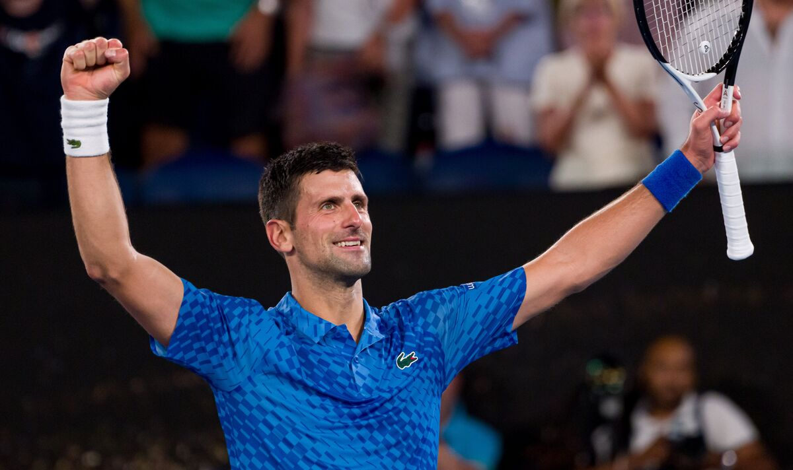

At Rod Laver Arena in Melbourne Park on Sunday, Novak Djokovic of Serbia defeated third seed Stefanos Tsitsipas of Greece 6-3, 7-6 (7-4), and 7-6 (7-5) to tie for his tenth Australian Open victory. 22 victories at Grand Slam singles tournaments is a world record. The 35-year-old Djokovic will tie Rafael Nadal of Spain's record with this victory, which came in just 33 Grand Slam finals, and go to the top of the global rankings. It was his fifth singles victory at the Australian Open. He is one of just two men to achieve 10 victories in a single Grand Slam, together with Rafael Nadal, who has 14 triumphs at the French Open. The 24-year-old Tsitsipas was competing in just his second Grand Slam final.
Novak Djokovic is a Serbian professional tennis player. According to the Association of Tennis Professionals (ATP), he is presently ranked No. 2 in the world in men's singles. He has held the top spot for a record-breaking 380 weeks and seven times during the Open Era. He has amassed 93 singles victories on the men's ATP Tour, including a record 66 Big Titles, a joint-record six Tour Finals, a record 10 Australian Opens, a record 38 Masters, and a record 22 majors. The non-calendar year Grand Slam in singles was achieved by Djokovic, who is now the first player in tennis history to hold the titles of the four majors simultaneously on three distinct surfaces. He is also the only person to have twice completed the lifetime Golden Masters in singles by winning each of the nine Masters events, making him the first man in the Open Era to accomplish it.